ヤスミン新レリック暗殺者ガイド ヒーローウォーズ アライアンス
- 執筆: Alexandre Domingos. .
新しいレリックがヤスミンの暗殺者としての潜在能力を解き放ち、テレポートするたびに致死性が増し、追跡はほぼ不可能になります。敵は気づかぬうちに毒の連撃で勝負を決められてしまうでしょう。
本アップデート版ガイドでは、レリックで強化された毒スタックをオヤ、ファフニール、エレクトラ、セバスチャン、トリスタンと同期させる方法や、敏捷グリフとヒドラ戦のタイミング調整を解説し、継続的なプレッシャーを維持するコツを紹介します。
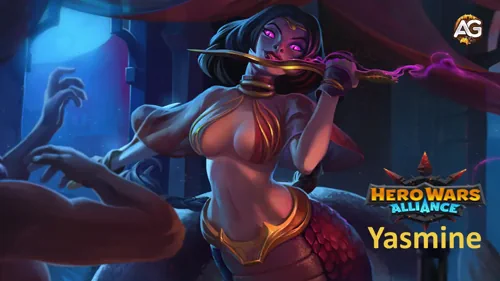
ヤスミンとはどんなヒーロー？
ヤスミンは自然の道に属する前衛アサシンです。必殺技「ダンス・オブ・デス」で背後に瞬間移動し、毒スタックと回避率上昇を組み合わせて敵のキーヒーローを狙い撃ちします。
- グリフクラス: ウォリアー
- 配置: フロントライン
- 主要ステータス: 敏捷
- 主な役割: アサシン
- 派閥: 自然の道
- ベストシナジー: オヤ、ファフニール、エレクトラ、セバスチャン、トリスタン
- ヒドラティアリスト: 火・大地ヘッドに対してAティア
- ソウルストーンの入手方法: 英雄チェスト、ヒドラショップ、季節イベント
オヤの防御ダウンと合わせると毒付きクリティカルが確実に通り、ファフニールはバリアとエネルギー供給でヤスミンを守ります。エレクトラのコントロールで敵ヒーラーを黙らせながら、セバスチャンの弱体化解除とクリティカル支援で連撃が伸び、トリスタンがバリアや祝福を剥がして短時間で仕留める隙を作ります。
ヒドラ戦では、タンクがスタンを入れた瞬間に必殺技を発動し、毒ダメージとクリティカル連撃で単体ヘッドを迅速に倒す立ち回りが効果的です。
ヤスミンの長所と短所 - ヒーローウォーズ アライアンス
✅ 長所
- 高バーストダメージ：死の舞踏が複数の壊滅的なクリティカルストライクを放ち、脆弱なターゲットを数秒で消去
- 継続ダメージ (DoT)：継続的な毒が回復を無視し、アルティメット終了後も一定の圧力を維持
- コントロール免疫：死の舞踏中はスタンと無効化に免疫、中断なしにコンボを完了
- 後衛アサシン：優先ターゲット（ヒーラー、サポート）に直接テレポートし、前衛を完全に迂回
- 高回避：Shadow Waltzが大量の回避を提供し、敵陣深くでの生存を可能に
- 純粋ダメージ：Lethal Stingが防具を無視する純粋ダメージを与え、重装甲タンクに最適
- Hydraで優秀：火と土のヘッドに対してAティア、ボス戦に理想的な持続ダメージ
- セバスチャンとのシナジー：彼の賛歌によってクリティカルチェーンが増幅され、クリティカルヒットマシンに変身
❌ 短所
- Corvusに脆弱：Corvusの祭壇が彼女のDoTを大量の純粋ダメージで厳しく罰する
- Heliosにカウンターされる：太陽風がすべてのクリティカルヒットに報復し、壊滅的な反撃ダメージを与える
- Amiraに弱い：クリティカルファンブルがクリティカルを半分ダメージの通常攻撃に変える
- クリティカル依存：高いクリティカル率がないとダメージ出力が大幅に低下
- 高投資必要：輝くために進化したRelic、優先スキン、特定のグリフが必要
- 瞬間バーストに脆弱：敵チームが高い初期バーストを持つ場合、コンボ完了前に消去される可能性
- 高アーマーチームに弱い：オヤのようなアーマー破壊味方がいないと物理ダメージが大幅に減少
- 保護が必要：生存率を最大化するためにシールド（ファフニール）またはクレンズ（セバスチャン）に依存
ヤスミン新レリック育成優先度 - ヒーローウォーズ アライアンス
レリックで強化されたヤスミンの動きを知れば知るほど好奇心が湧きます。ここでは誰でも分かる言葉で強化順を整理します。
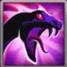
1番目 - ダンス・オブ・デス
物理ダメージ式: 59,520 (60% 物理攻撃 + 2,400)
ヤスミンは最も防御力の低い敵を3.0秒間まひさせ、背後に跳んで7連撃を放ちます。モーション中はデバフ無効で、各斬撃が59,520 (60% 物理攻撃 + 2,400)の物理ダメージを与え、アサシンマークを付与して攻撃を継続します。

育成優先度: 最優先 – バーストと拘束を担う主力。まずはここを上げれば勝ち筋が安定します。
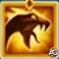
1番目 – レジェンダリーレリックLv10: 余韻の免疫
ダンスが終わっても免疫が残り、スタンやサイレンスを受けずにターゲットを仕留められます。
育成優先度: 最優先 – アンチレリック対策として必須。安全に追撃できます。
レリック レベル10 解放情報
| 情報 | 値 |
|---|---|
| レリック破片必要数（レベル2–10） |

280
|
| 合計レリック破片必要数（レベル0–10） |
330
|
| 合計物理攻撃ボーナス（レベル0–10） |

+7332
|
| 合計体力ボーナス（レベル0–10） |

+56149
|
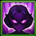
2番目 – アサシンの本能
ダンス・オブ・デス発動時にクリティカル率と回避が10秒間アップし、実質44,040 (45% 物理攻撃 + 1,200)分の安定感を得ます。
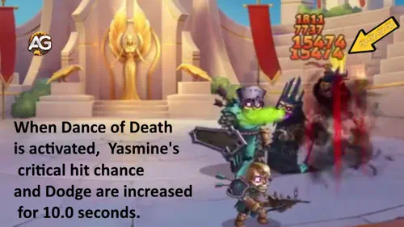
育成優先度: やや高め – クリ率が毒スタックを伸ばし、回避がシャドウワルツと噛み合います。
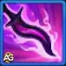
3番目 - 痛みの抱擁
純ダメージ式: 24,760 (25% 物理攻撃 + 960)
クリティカル毎に毒を付与し、5.0秒ごとに24,760 (25% 物理攻撃 + 960)の純ダメージを与えます。最大10スタックまで重なり、再度クリティカルで持続時間が更新されます。

育成優先度: 高い – 純ダメージは防御を無視し、タンクを確実に溶かします。
3番目 – レジェンダリーレリック強化 Lv20: クリティカルでエネルギー獲得
レリック レベル20 解放情報
| 情報 | 値 |
|---|---|
| レリック破片必要数（レベル11–20） |
800
|
| 合計レリック破片必要数（レベル0–20） |
1130
|
| 合計物理攻撃ボーナス（レベル0–20） |
+19552
|
| 合計体力ボーナス（レベル0–20） |
+149734
|
クリティカル毎にエネルギーが返ってくるため、再びダンス・オブ・デスを打つ速度が上がります。
育成優先度: 高い – エネルギー循環が整うと毒ループが途切れません。
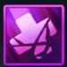
4番目 – 未知の毒素
毒状態の敵が受ける回復を26,450 (25% 物理攻撃 + 2,650)分だけ減少させ、ヒーラー構成を窒息させます。
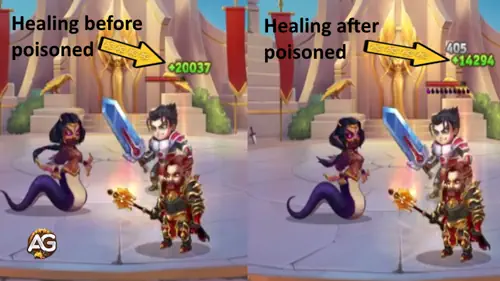
育成優先度: 中程度 – 回復特化の敵には刺さりますが、決定打は他のスキルが担います。
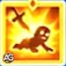
5番目 - リーサル・スティング レジェンダリー: レリックLv1
物理ダメージ式: 100% 物理攻撃
数秒ごとにHPが最も低い敵へ自動でクリティカル攻撃を放ち、100% 物理攻撃分のダメージと毒更新を与えます。
レリック レベル1 解放情報
| 情報 | 値 |
|---|---|
| レリック破片必要数（レベル0–1） |
50
|
| 合計レリック破片必要数（レベル0–1） |
50
|
| 合計物理攻撃ボーナス（レベル0–1） |
+3760
|
| 合計体力ボーナス（レベル0–1） |
+28794
|
育成優先度: やや高め – 自動追撃でトリスタンやセバスチャンの支援にぴったり。
| 情報 | 値 |
|---|---|
| レリック破片必要数（レベル21–30） |
1750
|
| 合計レリック破片必要数（レベル0–30） |
2880
|
| 合計物理攻撃ボーナス（レベル0–30） |
+38352
|
| 合計体力ボーナス（レベル0–30） |
+293704
|
ヤスミンに最適なスキン優先度 - ヒーローウォーズ アライアンス
敏捷と貫通を伸ばすスキンほど毒ループが鋭くなる。この優先度表で各コスチュームの実戦価値を一目で確認しよう。

デフォルトスキン
敏捷ステータスが物理攻撃と防御を同時に底上げし、すべてのスキルダメージ循環を支える基礎になります。
育成優先度: 最優先 – まず最大強化してクリ率や装甲破壊の伸びを増幅させましょう。
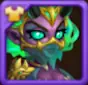
デモニックスキン
クリティカル率が上がり、序盤やキャンペーンで毒スタックが安定しますが、後半はセバスチャンの支援と重複します。
育成優先度: 中程度 – 主要な攻撃スキンを仕上げた後に、対回避編成用として上げましょう。
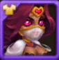
ロマンティックスキン
物理攻撃力が大幅に伸び、ファフニールのバフやトリスタンのデバフと連携してタンカーを素早く処理します。
育成優先度: 高い – 敏捷スキンの次に強化して、テレポート後の一撃を最大化しましょう。

マスカレードスキン
魔法防御が向上し、オリオンやセレステのバーストから身を守れますが、直接火力には寄与しません。
育成優先度: 低い – オフェンス系スキン完成後、魔法パーティ対策として必要な分だけ育成。
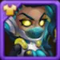
サイバーネティックスキン+
Skin+による攻撃力の急増で、ダンス・オブ・デスと毒ダメージがギルド戦の回復ラインを突破します。
育成優先度: 最優先 – デフォルトとミシックスキンと並行して育て、最高火力を目指しましょう。
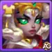
ミシックスキン
アーマーペネトレーションが加算され、セバスチャンのシールドやオーロラのバリアを貫通して毒の初動を通します。
育成優先度: 最優先 – 敏捷スキンとセットで鍛えて、タンクやヒドラヘッドを素早く崩しましょう。
サイバーネティックスキンのアップグレード版は物理攻撃ボーナスが2倍になります。
デフォルトスキン: 敏捷 +1365 → 物理攻撃 +4095、アーマー +1365、主要ステータス補正でさらに物理攻撃 +1365。
デモニックスキン: クリティカル率 +2960。
ロマンティックスキン: 物理攻撃 +7095。
マスカレードスキン: 魔法防御 +10650。
サイバーネティックスキン+: アップグレード後の物理攻撃 +28380。
ミシックスキン: アーマーペネトレーション +10650。
ヤスミンのアーティファクト優先度 - ヒーローウォーズ アライアンス
ヤスミンのアーティファクト優先度を整理し、ダンス・オブ・デスと毒連携を最大化するために何から強化すべきかを解説します。
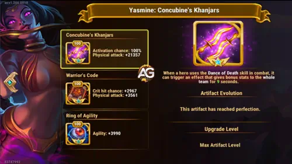
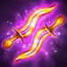
1番目 - Concubine's Khanjars
武器アーティファクトはダンス・オブ・デス発動時に確定発動し、9秒間チーム全体の物理攻撃を底上げして瞬間火力を跳ね上げます。
育成優先度: 最優先 – 必殺技と同時に全員を強化し、セバスチャンの賛歌とも相乗するため真っ先に最大強化しましょう。

2番目 - Warrior's Code
書物はクリティカル率と物理攻撃を補い、セバスチャンが沈黙された状況でも毒スタックを維持できる安定性を与えます。
育成優先度: 高い – 武器の次に強化して基礎クリ率を底上げし、回避編成にも安定して毒を入れられるようにします。

3番目 - Ring of Agility
リングは敏捷を物理攻撃とアーマーに変換し、長期戦での耐久と安定火力を高めますが即時バーストは伸びません。
育成優先度: やや高め – 武器と書物を仕上げた後で育成し、ヒドラ戦やギルド戦の持久力を補強しましょう。
Concubine's Khanjars: ダンス・オブ・デスと同時に発動、9秒間チームへ物理攻撃+21,357（発動率100%）。
Warrior's Code: クリティカル率+2,967、物理攻撃+3,561。
Ring of Agility: 敏捷+3,990 → 物理攻撃+11,970、アーマー+3,990、主要ステータス補正でさらに物理攻撃+3,990。
ヤスミンのグリフ優先度
グリフの投資順を把握すれば、ヤスミンのステルスバーストを維持しつつカウンター攻撃を耐えるための土台が整います。
1番目 - 物理攻撃グリフ
物理攻撃を底上げするとダンス・オブ・デスと毒付きクリティカルの火力が直結して伸びます。
レベル80ステータス: 物理攻撃 +8,340。
育成優先度: 最優先 – まず最大強化して必殺技の瞬間火力を確実にし、毒ループを早期に完結させましょう。
2番目 - 体力グリフ
体力を伸ばすことでオリオンやダンテの反撃を耐え、シャドウ・ワルツやセバスチャンの浄化を待てます。
レベル80ステータス: 体力 +122,800。
育成優先度: 中程度 – 攻撃系を整えた後に強化し、前衛で粘る力を補強します。

3番目 - クリティカル率グリフ
クリティカル率を確保すれば、セバスチャンが封じられても痛みの抱擁の毒が切れません。
レベル80ステータス: クリティカル率 +4,170。
育成優先度: 高い – 序盤に投資して毒更新とエネルギー還元を安定させましょう。

4番目 - 回避グリフ
回避はアサシンの本能とシャドウ・ワルツを支え、毒が決着するまで反撃を受けにくくします。
レベル80ステータス: 回避 +4,170。
育成優先度: やや高め – クリ率を確保した後に伸ばし、ダンテやキラの強烈なバーストをいなします。

5番目 - 敏捷グリフ
敏捷は物理攻撃とアーマー、さらに主要ステータス補正で追加攻撃力を同時に伸ばします。
レベル80ステータス: 敏捷 +2,110（物理攻撃 +6,330、アーマー +2,110、追加物理攻撃 +2,110）。
育成優先度: 最優先 – 物理攻撃グリフと並行して強化し、火力と耐久をまとめて底上げします。
ヤスミンのタリスマンガイド ヒーローウォーズ アライアンス
タリスマンは戦闘間でも固定値が残るため、ヤスミンのステルス連撃と毒ループを維持するリリックを選びましょう。
Talisman of Vengeance
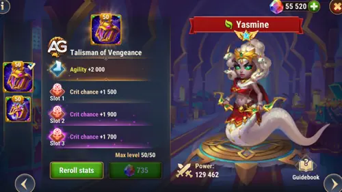
メインステータス: 敏捷 +2,000（→ 物理攻撃 +6,000、アーマー +2,000 へスケーリング）。
リロール合計: クリティカル率 +6,600。
|
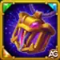 Talisman of Vengeance |
合計ステータス |
|---|---|
|
敏捷 |
敏捷 +2,000 （物理攻撃 +6,000、アーマー +2,000） |
| スロット1 | スロット2 | スロット3 | リロール合計 |
|---|---|---|---|
|
クリティカル率 +2,200 |
クリティカル率 +2,200 |
クリティカル率 +2,200 |
クリティカル率 +6,600 |
Talisman of Dancer
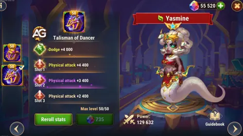
メインステータス: 回避 +4,000。
リロール合計: 物理攻撃 +6,000。
|
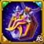 Talisman of Dancer |
合計ステータス |
|---|---|
|
回避 |
回避 +4,000 |
| スロット1 | スロット2 | スロット3 | リロール合計 |
|---|---|---|---|
|
物理攻撃 +2,000 |
物理攻撃 +2,000 |
物理攻撃 +2,000 |
物理攻撃 +6,000 |
最適な選択: アリーナとヒドラ戦ではTalisman of Vengeanceを装備しましょう。敏捷がグリフと重なって伸び、クリティカル率 +6,600 でセバスチャンの賛歌が切れても痛みの抱擁を維持できます。Dancerは強烈なバーストへの保険になりますが、Vengeanceの方が火力と安定性を両立します。
ヤスミンを倒す方法 ヒーローウォーズ アライアンス (how to counter yasmine)
ヤスミンはクリティカルダメージと継続ダメージの毒に依存する致命的なアサシンです。彼女を無力化するには、敏捷性とクリティカルヒットに基づく戦闘スタイルを罰するヒーローを使用してください。以下、アルファベット順の最高のカウンター：
アミラ
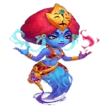
コーブス
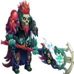
ヘリオス
アミラ：ヤスミンは敏捷性を主要ステータスとするヒーローであり、アミラは敏捷性を主要ステータスとする敵と「公正な取引」を行います。彼らのクリティカルヒットは9.0秒間クリティカルファンブルになり、クリティカルヒット率が増加します。クリティカルファンブルは通常攻撃の半分のダメージを与えるため、ヤスミンのダメージポテンシャルを完全に無力化します。
コーブス：コーブスの祭壇は、継続ダメージ効果を持つヒーローに高い純粋ダメージを与えます。ヤスミンが死の舞踏を使用すると、敵に継続的な毒を適用し、コーブスの祭壇を発動させ、防具を無視する純粋ダメージで彼女を厳しく罰します。これにより、彼女自身の能力が彼女に対して使われます。
ヘリオス：太陽風がアクティブな間、ヘリオスの味方がクリティカルヒットを受けるたびに、燃える球体はダメージを与えた攻撃者を火のビームで攻撃します。ヤスミンはダメージを与えるためにクリティカルヒットに完全に依存しているため、彼女の攻撃のたびにヘリオスの報復を引き起こし、その代わりに大きなダメージを受けます。
ヤスミンの最強チーム – ヒーローウォーズ・アライアンス
- ファフニール, ヤスミン, オヤ, トリスタン, エレクトラ
- ファフニール, ヤスミン, オヤ, トリスタン, アスタロス
- エイダン, ヤスミン, セバスチャン, トリスタン, ジュリアス
- ポラリス, フォリオ, テンプス, ヤスミン, エレクトラ
- ファフニール, テンプス, バーナ, ヤスミン, エレクトラ
- ファフニール, ヤスミン, オヤ, トリスタン, アスタロス
- エイダン, ヤスミン, セバスチャン, トリスタン, ジュリアス
結論：ヒーローウォーズ アライアンスでヤスミンをマスターする
ヤスミンは、特に伝説のレリック導入後、Hero Wars Allianceで最も致命的なアサシンの一人として確立されました。テレポートを通じて優先ターゲットを排除し、壊滅的な毒を適用し、死の舞踏中に群衆コントロールに対して免疫を持つ能力により、競争的なアリーナとヒドラ戦闘におけるプレミアムな選択肢となっています。
このヒーローへの投資には慎重な優先順位付けが必要です：まずダメージと免疫を増幅するレリックスキルを最大化し、敏捷性のためにデフォルトスキンを開発し、物理攻撃とクリティカルヒットのグリフに集中します。セバスチャンが彼女のクリティカルチェーンを増幅し、オヤが敵のアーマーを破壊することで、ヤスミンはあらゆる対決を迅速かつ効率的な処刑に変えます。
ただし、彼女の自然なカウンターに注意してください — コーブス、ヘリオス、アミラは適切な保護なしに彼女の可能性を無力化できます。シールドにはファフニール、追加コントロールにはエレクトラ、バリア除去にはトリスタンと組み合わせてください。このようにして、脆弱性を最小限に抑えながら影響を最大化します。
このガイドに従うことで、ヤスミンから最大のパフォーマンスを引き出し、PvPとPvEの両方で壊滅的なチームの中心的存在に変えることができます。戦闘での幸運を祈り、あなたの刃が常に正しいターゲットを見つけますように！
プレイヤー：Cat food さん
Hero Wars Alliance の日本語翻訳にご協力いただき、本当にありがとうございます。
あなたのサポートのおかげで、Alexandre Games は日本のプレイヤー向けに、より正確で分かりやすいガイドを作成することができました。
心より感謝しています。
これからも Hero Wars Alliance コミュニティがさらに成長していくことを願っています。
本当にありがとうございました！
Sugestões de Vídeo:

おすすめガイド

コメントでシェアしよう
ヤスミンの活用方法は見つかりましたか？疑問点やおすすめ編成があれば、Alexandre Gamesのコメント欄でぜひ共有してください。コミュニティと一緒に最強の暗殺プランを磨きましょう。
下のボタンを押してコメントを表示：